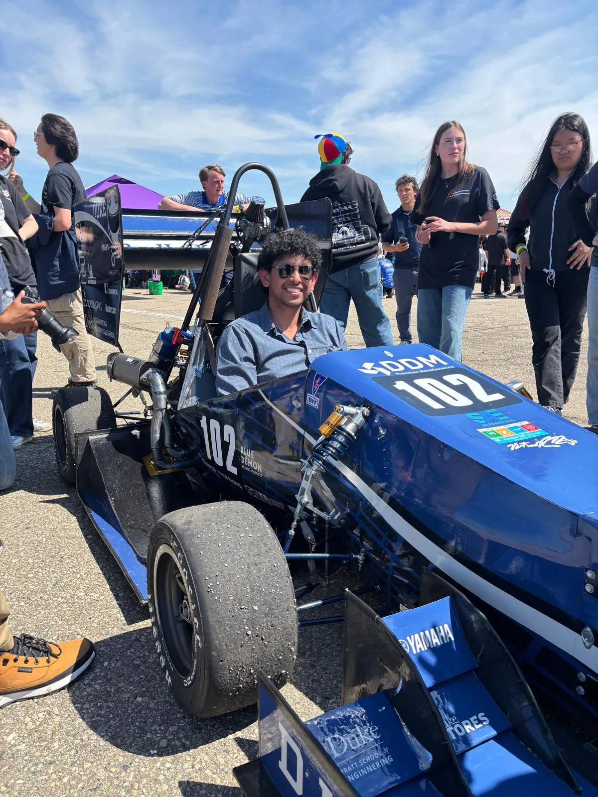
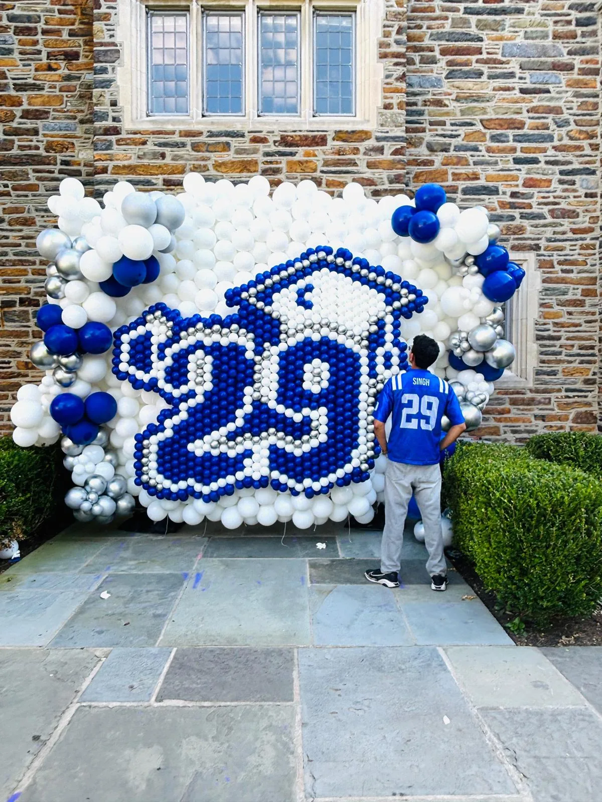
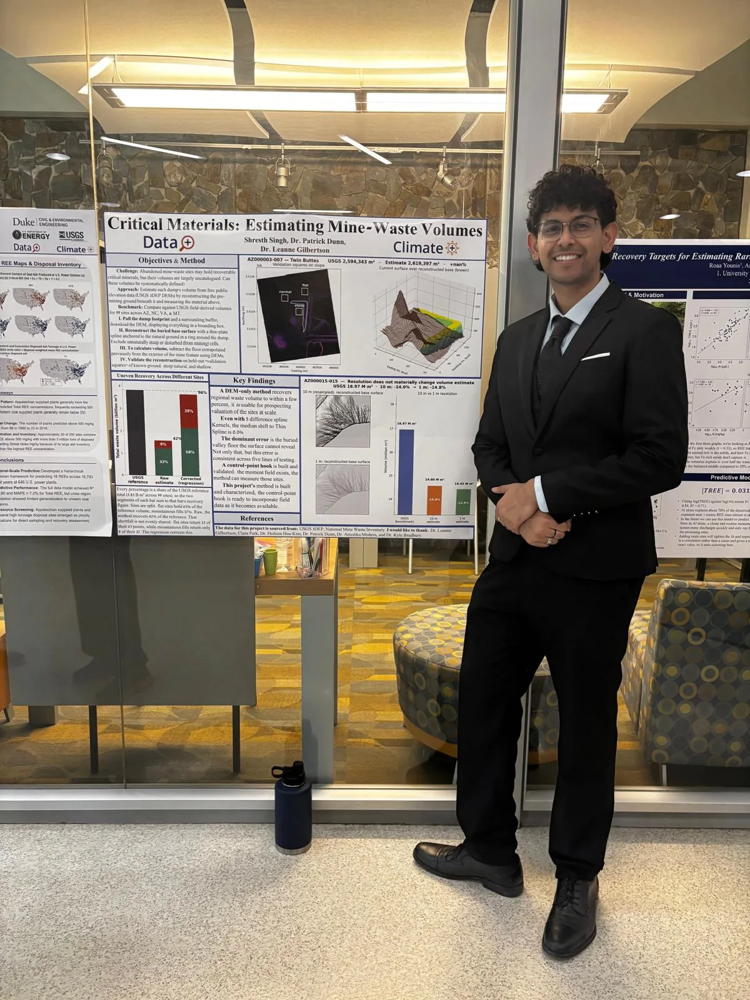
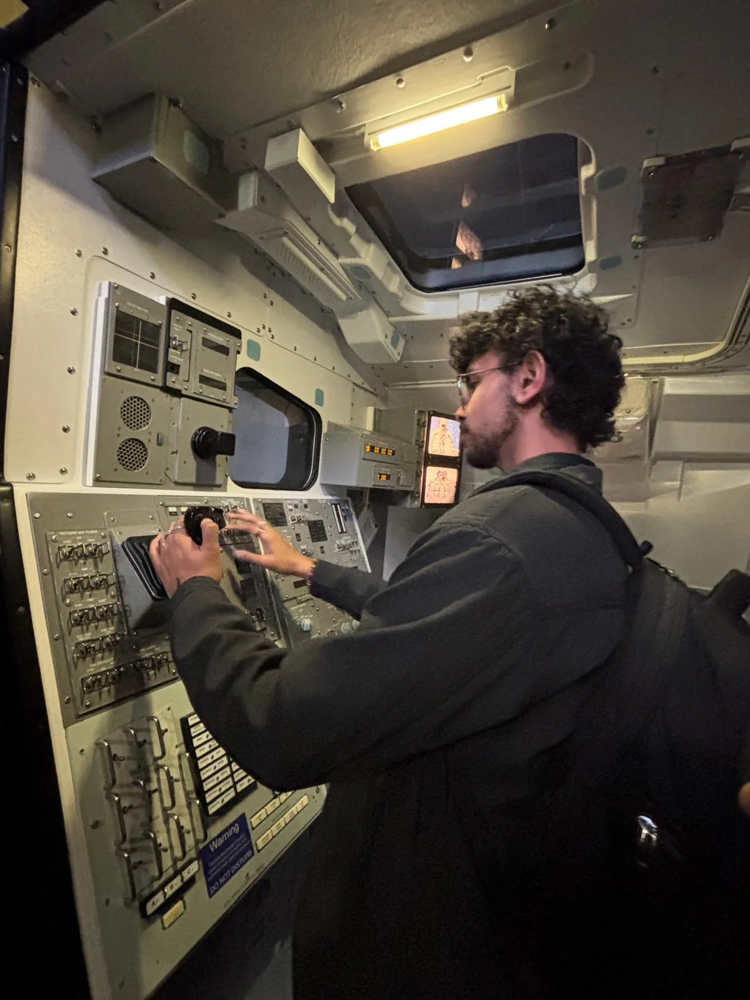
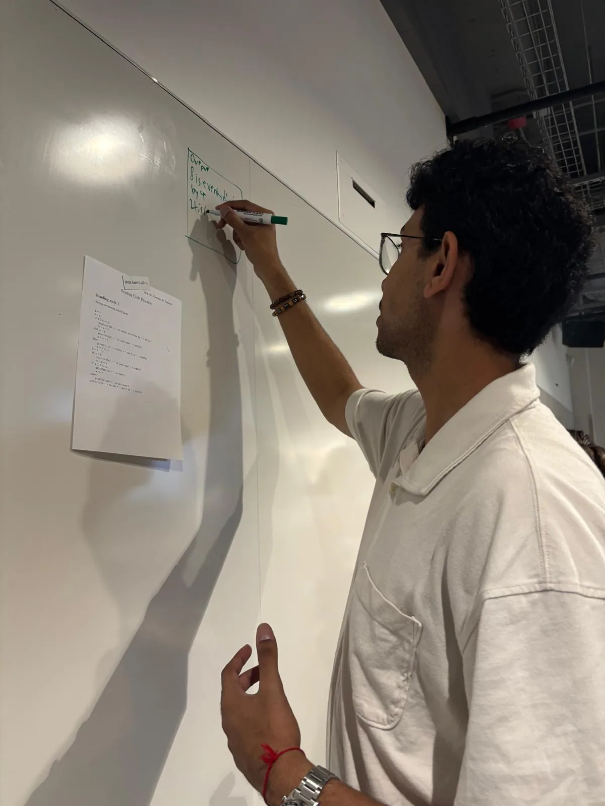
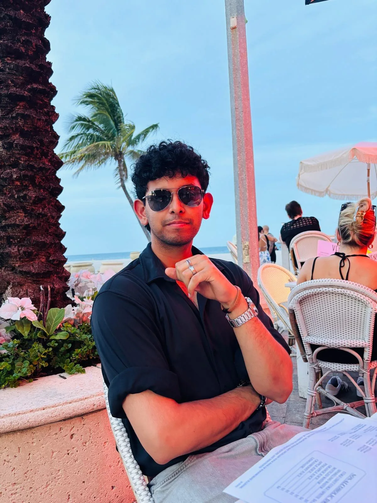
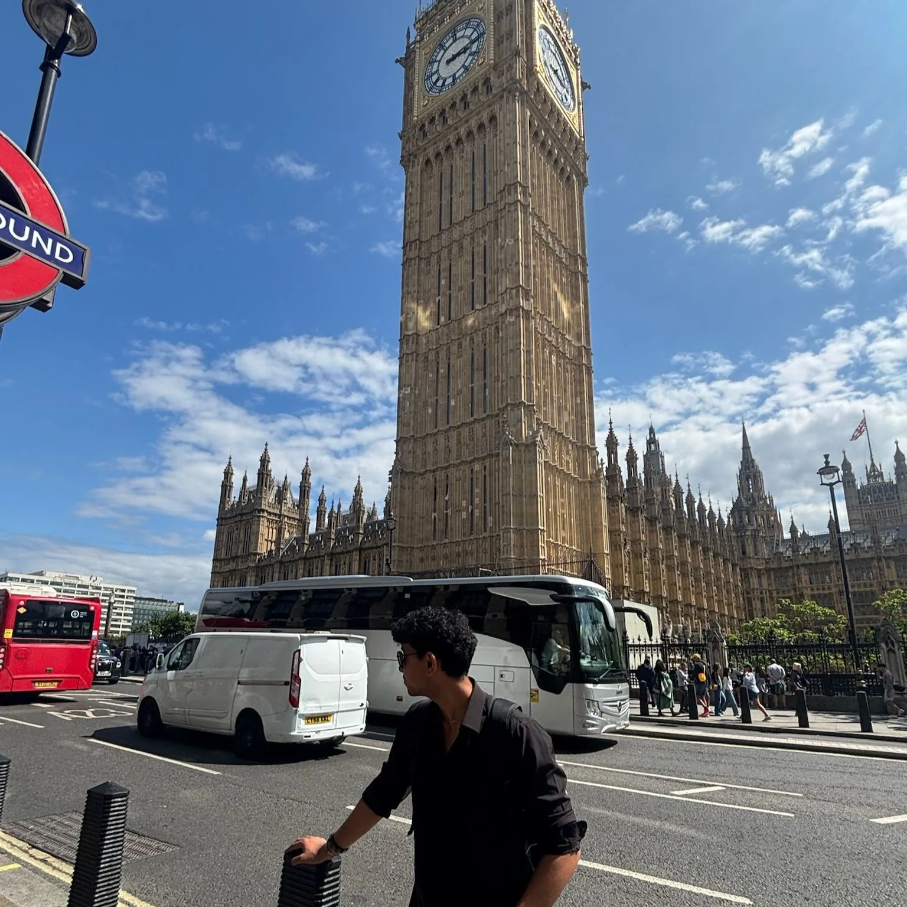
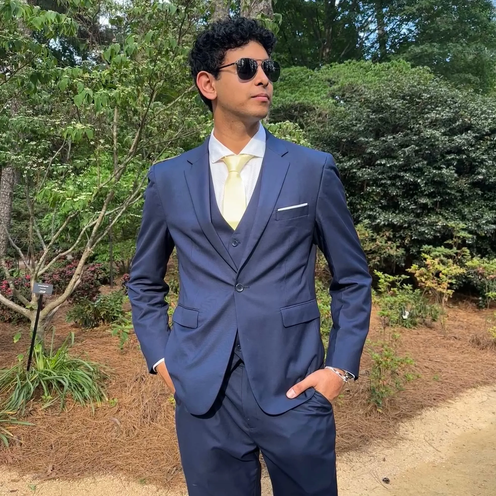
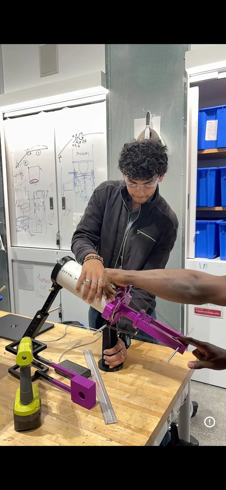

Hello, I'm
Welcome. I'm a mechanical engineering student at Duke. From carbon-fiber airframes, Formula SAE suspension components, to analytical work, I build things that work, and prove it. This summer, I researched critical materials with Duke's Data+ program, betting on a future I'm fairly serious about: the coming AI buildout will surge energy demand, and so it will require physical systems that work.
Everything here is progress toward that same goal: whether it's my engineering, programming, leadership, or a long-running reading project in philosophy.









Research
Duke Data+ — Critical Materials
I spent my freshman summer estimating mineral volumes across ~100 sites at Data+, under the guidance of Dr. Patrick Dunn, and Dr. Leanne Gilbertson.
Motorsports
Formula SAE — Vehicle Dynamics
I joined FSAE Duke my first spring semester, and have become riveted to racecar engineering ever since. Throughout the summer design process, I have worked on upright load cases and FEA automation. I also competed at FSAE Michigan, 2026.
Aerospace
Duke Aero — Composites & FEA
Over the course of my freshman year, I worked on the Von Kármán nose cone, which was fabricated to <1 mm and validated in ANSYS. After all, it's only rocket science.
“I care as much about where a method stops working as where it works. The most useful thing I built last summer was an honest account of its own limits.”
Each page represents a facet of my academic and intellectual journey. This site is updated regularly as my work evolves.